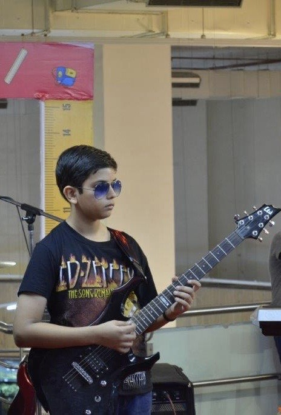

Electric Guitar
Gallery
I’ve been playing the electric guitar since I was 8 years old and performed on multiple stages as a kid. I’ve also passed the Trinity College London Rock & Pop exams up to Grade 4. I’m into heavy metal—Pantera, Metallica, Black Sabbath, Megadeth—and rock like AC/DC and Arctic Monkeys.
